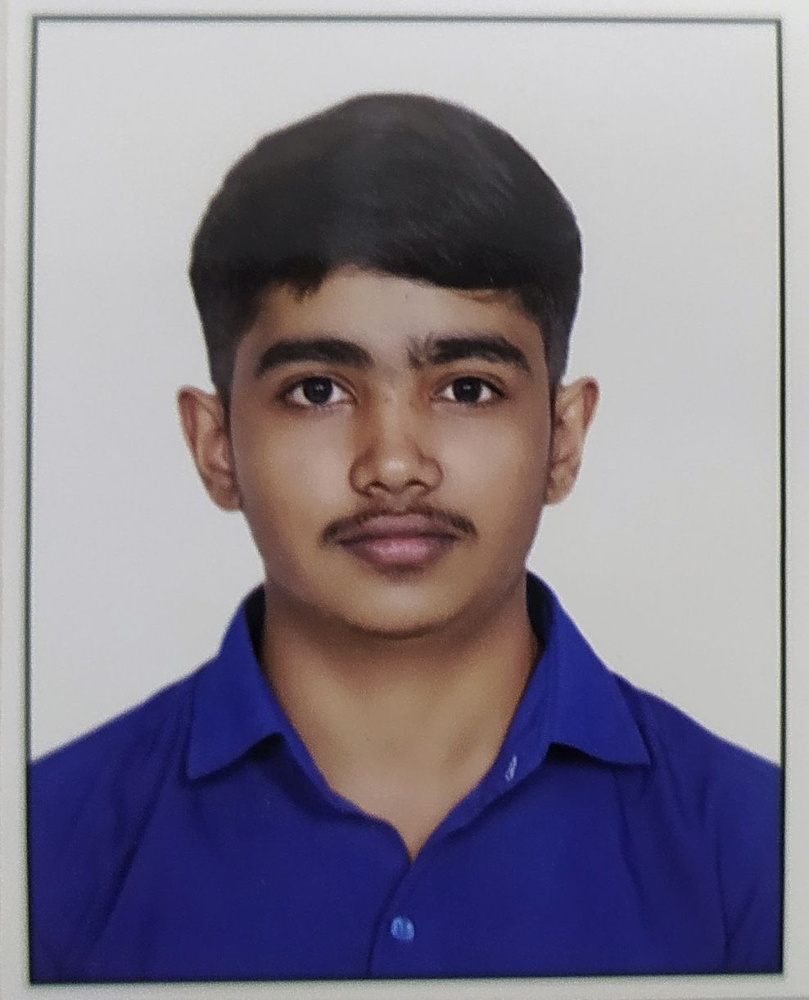

Ravi Rathod
Welcome to My Personal Website
About
This is my personal website serves as a digital space where I showcase my interests, accomplishments, and share my experiences with a wider audience. Whether you're a friend, family member, potential employer, I invite you to explore and learn more about who I am and what I'm passionate about.
Through this website, I aim to connect with like-minded individuals, share insights, and foster meaningful conversations. Join me on this digital journey, and feel free to reach out, I look forward to connecting with you!
Profile
• My Brief Description :  Hello, I'm Ravi Rathod, I am from Jamnagar. Currently I am studying in my 4th semester at CSPIT-Charusat University, pursuing a degree in computer engineering. Beyond academics, I find joy in diverse hobbies such as solving cubes, exploring new places through travel, and indulging in the excitement of cricket. I am passionate about the world of technology and look forward to leveraging my skills and knowledge as I progress in my academic journey.
• Education :
| Degree | Institution | Result | Year |
|---|---|---|---|
| B.Tech in Computer Engineering | CSPIT College - Anand | - | 2023 - Continue... |
| Diploma in Computer Engineering | BBIT College - Anand | 7.91 CGPA | 2020 - 23 |
| 10th | B M Patel Primary School - Jamnagar | 75.34% | 2019 - 20 |
• Social Profile: My Social Media Links
My Linkedin ProfileCertificate
• Coursera: Coursera certificates here.
1. English Communication Skills
2. Speak English Professionally
• Other: Another certificates is here.
Resume
Contact
• Email: ravirathod.ce@gmail.com
Projects
• Diploma Project :
1. Finger-print Unlock System
Motivation :
The motivation for creating a Fingerprint Door Unlock System lies in enhancing security by leveraging biometric technology for seamless and reliable access control.
The motivation for creating a Fingerprint Door Unlock System lies in enhancing security by leveraging biometric technology for seamless and reliable access control.
Solution :
Implement a fingerprint sensor module to capture and authenticate fingerprints. Develop a microcontroller-based system to process fingerprint data and control door locking mechanism. Integrate software for user management and access control, ensuring secure and reliable door unlocking based on authenticated fingerprints.
Implement a fingerprint sensor module to capture and authenticate fingerprints. Develop a microcontroller-based system to process fingerprint data and control door locking mechanism. Integrate software for user management and access control, ensuring secure and reliable door unlocking based on authenticated fingerprints.
• B. Tech Project :
1. Restaurant Management System
Motivation :
Running a restaurant efficiently requires balancing numerous tasks from Inventory management to customer satisfaction. Staff coordination, Menu innovation, and maintaining quality standards are essential for success.
Running a restaurant efficiently requires balancing numerous tasks from Inventory management to customer satisfaction. Staff coordination, Menu innovation, and maintaining quality standards are essential for success.
Solution :
Implementing robust communication channels, streamlined processes, and leveraging technology for inventory tracking and customer engagement can significantly enhance restaurant management efficiency. Prioritizing staff training and fostering a culture of teamwork can also drive success in the industry.
Implementing robust communication channels, streamlined processes, and leveraging technology for inventory tracking and customer engagement can significantly enhance restaurant management efficiency. Prioritizing staff training and fostering a culture of teamwork can also drive success in the industry.
2. Payroll Management System
Motivation :
Automating payroll management simplifies tasks, reduces errors, and ensures timely payments, which in turn boosts employee satisfaction and organizational efficiency.
Automating payroll management simplifies tasks, reduces errors, and ensures timely payments, which in turn boosts employee satisfaction and organizational efficiency.
Solution :
Implementing automated payroll calculations and self-service portals streamlines processes, saving time and reducing manual errors. Additionally, integrating tax calculation modules and regulatory reporting features ensures adherence to tax laws and labor regulations, minimizing legal risks.
Implementing automated payroll calculations and self-service portals streamlines processes, saving time and reducing manual errors. Additionally, integrating tax calculation modules and regulatory reporting features ensures adherence to tax laws and labor regulations, minimizing legal risks.